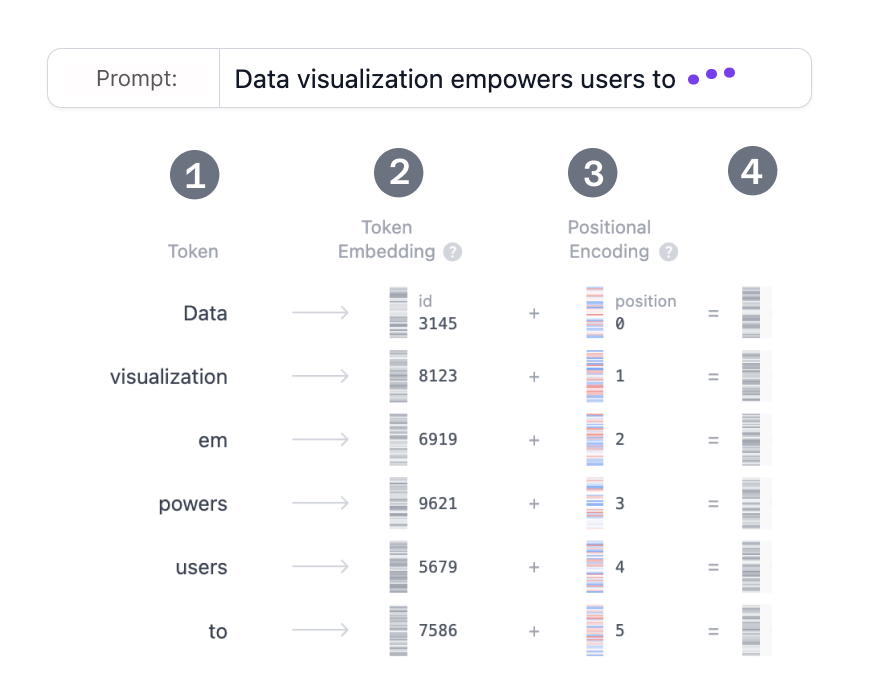

ARCHITECTURE / 01 · TEXT TRANSFORMERS
How does GPT-2 turn text into the next token?
Look through the different parts of an LLM and see how it predicts the next token. This page is entirely inspired by Transformer Explainer ↗ from Polo Club of Data Science.
ON THIS PAGEExplorerEmbeddingAttentionMLPProbabilities
Use ‹ › on the dotted frames to change block or head. Hover a token to trace it, or a dot to read one attention weight. Recorded from GPT-2 (small): tokens, attention scores and next-token scores. The grey vector bars are illustrative. This page does not run a model, so the sentence is fixed and Generate only redraws the last step.
01 / EMBEDDING
Embedding
Let's say you want to generate text using a Transformer model. You add the prompt like this one: “Data visualization empowers users to”. This input needs to be converted into a format that the model can understand and process. That is where embedding comes in: it transforms the text into a numerical representation that the model can work with. To convert a prompt into embedding, we need to 1) tokenize the input, 2) obtain token embeddings, 3) add positional information, and finally 4) add up token and position encodings to get the final embedding. Let’s see how each of these steps is done.

Step 1: Tokenization
Tokenization is the process of breaking down the input text into smaller, more manageable pieces called tokens. These tokens can be a word or a subword. The words "Data" and "visualization" correspond to unique tokens, while the word "empowers" is split into two tokens. The full vocabulary of tokens is decided before training the model: GPT-2's vocabulary has 50,257 unique tokens. Now that we split our input text into tokens with distinct IDs, we can obtain their vector representation from embeddings.
Step 2. Token Embedding
GPT-2 (small) represents each token in the vocabulary as a 768-dimensional vector; the dimension of the vector depends on the model. These embedding vectors are stored in a matrix of shape (50,257, 768), containing approximately 39 million parameters! This extensive matrix allows the model to assign semantic meaning to each token, in the sense that tokens with similar usage or meaning in language are placed close together in this high-dimensional space, while dissimilar tokens are farther apart.
Step 3. Positional Encoding
The Embedding layer also encodes information about each token's position in the input prompt. Different models use various methods for positional encoding. GPT-2 trains its own positional encoding matrix from scratch, integrating it directly into the training process.
Step 4. Final Embedding
Finally, we sum the token and positional encodings to get the final embedding representation. This combined representation captures both the semantic meaning of the tokens and their position in the input sequence.
Text and figure from Transformer Explainer ↗ by Polo Club of Data Science, MIT licence. The token IDs in the figure are that page's placeholders, not GPT-2's real IDs.
02 / MULTI-HEAD SELF-ATTENTION
Multi-head self-attention
After embedding, each token is a vector that knows only itself and its position. Self-attention is the step where tokens read each other, so that “to” can know it follows “users” and “empowers”. Each block does it in four steps.
Step 1 · Query, Key and Value
Each token's vector is multiplied by three learned matrices to make three new vectors. A web search is a useful picture of what they are for:
- Query is what you type in the search bar: what this token wants to know about.
- Key is the title of each result: what every token offers to be found by.
- Value is the page behind the title: what a token hands over once it has been picked.
768
Each is 768 numbers, cut into 12 slices of 64. One slice is one head; the dark slice is head 1.
Step 2 · Twelve heads
The Query, Key and Value vectors are each cut into 12 equal slices of 64 numbers. Each slice is a head, and each head runs the next step on its own. Because they are trained separately, heads end up looking for different things: one may link a word to the word before it, another may follow the subject of the sentence. Step through the heads in the explorer above to see how different their patterns are.
Step 3 · Masked attention, inside one head
This is the part the three grids below show, using GPT-2's real scores. Rows are the token asking (the Query), columns are the token being looked at (the Key).
- Dot product. Every Query is multiplied with every Key. A high score means “this token is relevant to me”.
- Scale and mask. Scores are divided by √64 = 8 to keep them in a comfortable range. Then every score for a later token is set to −∞. The model is learning to predict what comes next, so it must not peek ahead.
- Softmax. Each row is turned into weights that add up to 100%. A masked score becomes exactly 0. (In training, dropout randomly zeroes a few weights here; it is off when the model is used.)
Read one row left to right: it tells you how one token spreads its attention over itself and the tokens before it. The first token can only look at itself, so its row is always 100%.
Step 4 · Mix the Values, then join the heads
The weights are used to blend the Values: a token's output is mostly the Value of the tokens it attended to most. That gives 64 numbers per head. The 12 heads' outputs are placed side by side to make 768 numbers again, passed through one more learned matrix, and added to the token's original vector (the residual connection). The token now carries information from the tokens before it.
03 / MLP
MLP (Multi-layer perceptron)
Attention moves information between tokens. The MLP is where each token, alone, does something with what it has gathered. It is two matrix multiplications with one simple function between them.
768 → 3,072
3,072 → 768
One block is attention followed by this MLP. GPT-2 (small) stacks 12 identical blocks.
Widen: 768 → 3,072
The first matrix makes the vector four times larger. The extra room lets the network pull apart patterns that are tangled together in 768 numbers, a bit like spreading papers out on a bigger desk before sorting them.
GELU: keep what fired
GELU is applied to each of the 3,072 numbers separately. It passes positive numbers through almost unchanged and pushes negative ones towards zero, so only the patterns that were actually found stay switched on. Without this step the two matrices would collapse into one, and the model could only draw straight lines through its data.
Narrow: 3,072 → 768
The second matrix brings the vector back to 768 numbers so the next block can read it. The result is added to the token's vector, again through a residual connection.
Why it matters
Every token goes through the same MLP with the same weights, and no token sees another here. These two matrices hold about 4.7 million numbers per block, roughly two thirds of the block; the attention step holds about 2.4 million. Much of what the model “knows” is thought to be stored in these layers. The Parameters chapter shows where those counts come from.
04 / OUTPUT PROBABILITIES
The last token's vector becomes a chance for every token.
A final linear layer gives one score (logit) per vocabulary token. Dividing by the temperature sharpens or flattens the scores. Top-k or top-p drops the unlikely tail, softmax turns what is left into probabilities, and one token is drawn.
Scores are real. Only the 50 highest of 50,257 were recorded, so top-p is computed over those 50.
Where does this page come from?
It is a plain-HTML retelling of Transformer Explainer ↗ by Polo Club of Data Science at Georgia Tech (source ↗, MIT licence), in this site's style. The original runs GPT-2 live in the browser and lets you type any sentence; open it for that. This page is not affiliated with or endorsed by its authors.
The numbers here were recorded from GPT-2 (small) by that project for its five example sentences: the tokens, the 50 highest next-token scores and the raw attention scores of all 144 heads. Scaling, masking, softmax, temperature, top-k and top-p are computed on this page from those recordings. The step-by-step structure of the attention and MLP sections, and the web-search picture of Query, Key and Value, follow the original article. Embedding and MLP vectors were not recorded, so the grey bars in the diagram are illustrative. The Embedding section and its figure are copied from the original as they are.